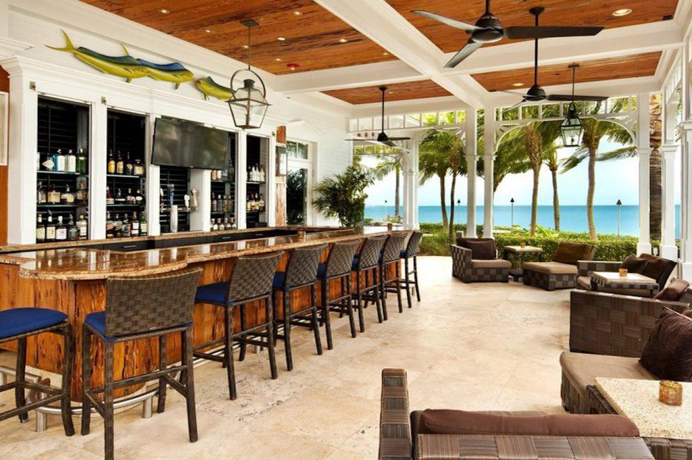
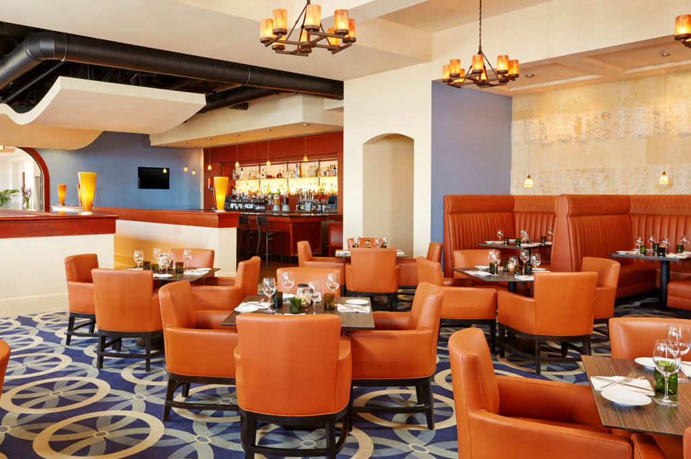
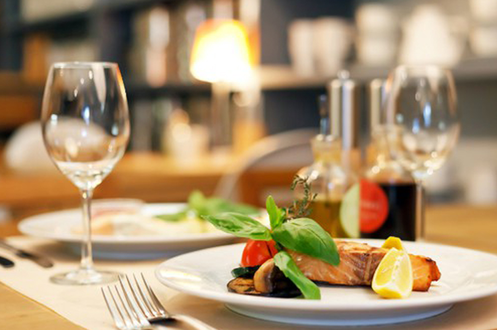
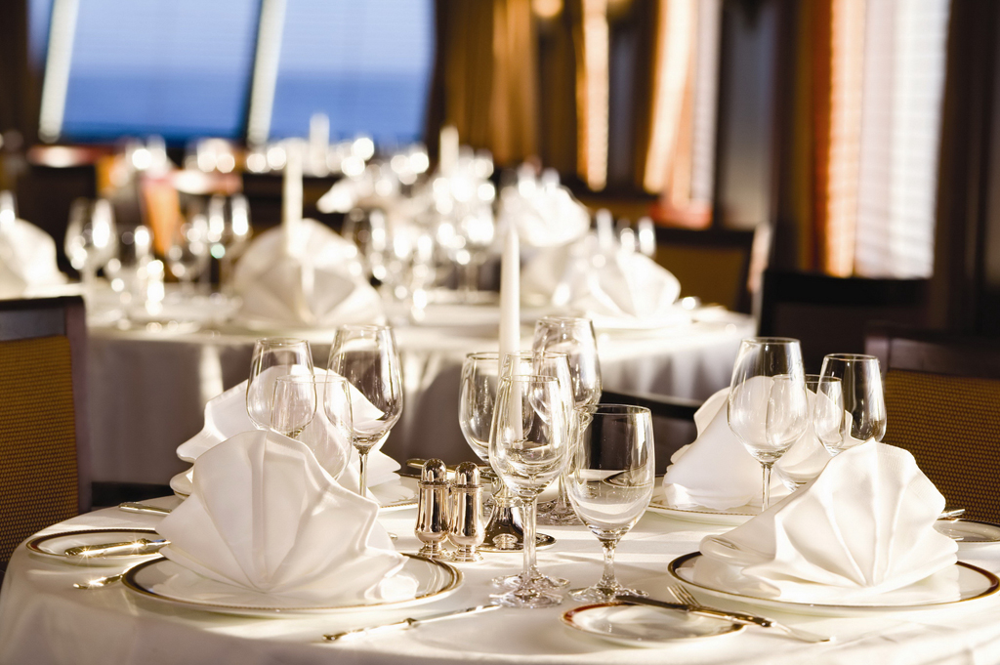
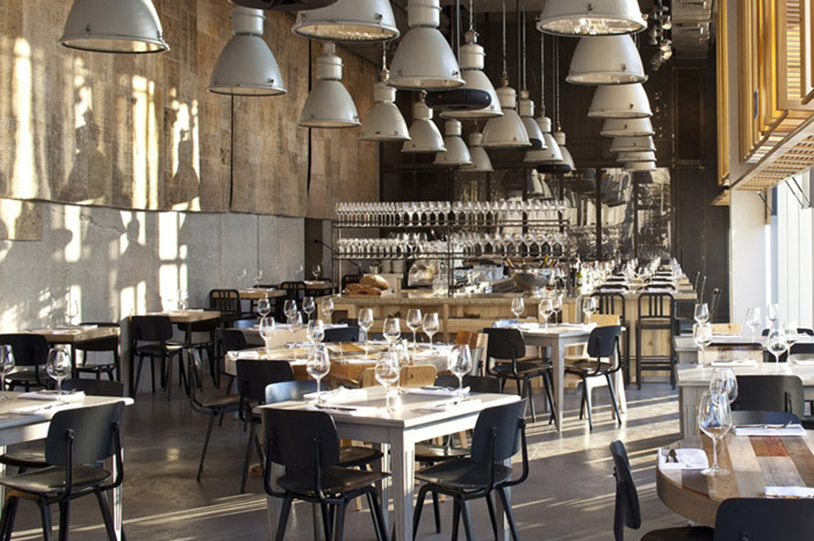

Food & Restaurant
Toqué!
Farm-fresh Québécois dishes & tasting menus from renowned chef Normand Laprise, plus fine wines.

Ferreira Café
Destination for fine Portuguese seafood, wines & ports in a Mediterranean-accented space.

Lawrence
Iconic Parisian-style bistro serving refined standards in a chic room with checkered floors & a bar

L'Express
Foodie destination for artisanal breads & sweets, with panini & salads, in a charming rustic space.

Europea
Super fine dining in an awesome Montreal neighborhood. Beautiful relaxing atmosphere. Exquisite presentation and taste

Have A great Journey to Montreal
Bon Voyage